Здесь список книг, которые я прочитал.
Одни из них я честно купил (а в случае с бесплатными книгами - скачал с официального сайта), с другими знакомился в электронном виде. Вы наверняка помните те сканированные страницы, в т.ч. фанатские издания вроде "C++ глазами хакера" в виде .chm-файла (с главами и прочими атрибутами, которыми не всегда могут похвастать лицензионные экземпляры). Для каждой упомянутой здесь книги приведен комментарий, почему она показалась мне интересной. Некоторые книги я читал в бумажном виде, некоторые в электронном. Для книг на русском языке и комментарии на русском. Для англоязычных изданий - на английском.
Также я включил год издания каждой книги (т.к. многие из них переиздавались несколько раз).
В таблице представлена обложка для каждой книги. Причем именно обложка того издания, которое я читал. Обложки кликабельны: гиперссылка ведет на официальный сайт автора(ов) книги. Если такого сайта нет, то ссылка укажет на сайт издательства (для конкретного языка, например, O'Reilly или Питер). Если же книга не представлена на сайте издательства, то ничего не остается, как отправиться в интернет-магазин, где книгу можно купить.
| Обложка | Название | Автор(ы) | Год издания | Комментарии |
|---|---|---|---|---|
| Computer Viruses, Artificial Life And Evolution: What Computer Viruses Can Teach Us About Life | Mark A. Ludwig | 1993 | This book is technically obsolete (all code examples are written for MS-DOS). But this book tells about the evolution from mathematical perspective and provides non-trivial interpretation of computer viruses. | |
|
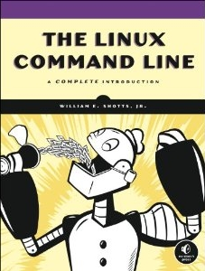 | The Linux Command Line | William Shotts | 2013 | Reveals the mystery about the terminal for newbies and imparts the loving of command-line interface for experienced users. The books is very example-centric and practical. |
|
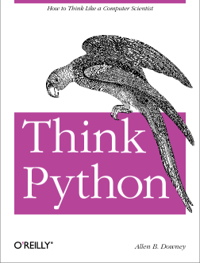 | Think Python | Allen B. Downey | 2015 | Tells the grasp of Python programming language mixed with basic algorithms and data structures. This book is very good in case if you would like to recall the university Computer Science course. As for me, the book brought a lot of memories from the beginning of my way in computer programming. |
|
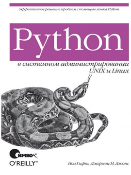 | Python в системном администрировании UNIX и Linux | Ноа Гифт, Джереми М. Джонс | 2015 | Вроде неплохой набор рецептов. Но в книге много воды. При этом действительно важным темам, таким безопасная передача аргументов из Python-"обертки" в программу командной строки, уделено мало внимания. Плюс Python 2 (и вообще это перевод издания аж 2008 года). |
|
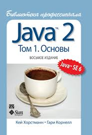 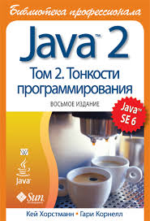 | Core Java | Кей С. Хорстманн, Гари Корнелл | 2011 | Пожалуй, это самая практичная и толковая книга о языке программирования Java. Здесь нет места паттернам, фреймворкам и пересказу документации. Зато есть много полезных сведений: как прочитать данные из файла, как использовать сокеты, как организовать работу нескольких потоков и т.д. Также не осталась в стороне тема графического интерфейса пользователя. Теории не так уж много. Но она изложена в порядке от простого к сложному, с акцентом на эволюцию языка Java. Восьмое издание устарело, ищите книги о современных версиях языка. |
|
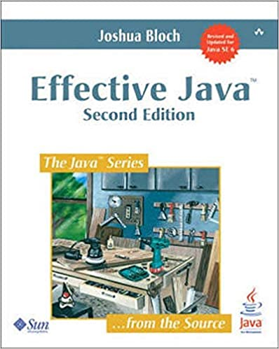 | Effective Java (2nd Edition) | Joshua Bloch | 2008 | Solid book about non-trivial programming technics. I was very impressed how Java programming language many-sided is. Also, this book helped me a lot when I prepared tricky Java questions for "Quick Quiz Questions" challenge. |
|
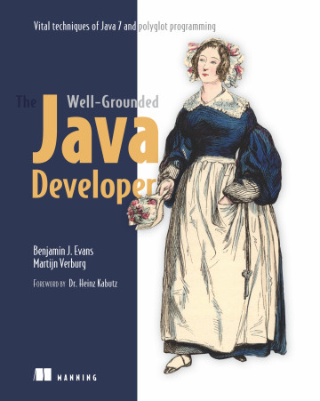 | Java. Новое поколение разработки | Бенджамин Эванс, Мартин Вербург | 2014 | Толковое руководство по Java 7. Причем внимание уделено как раз тем нововведениям, которые на первый взгляд ничего не дают. Зато при умелом использовании помогают значительно упростить код и обойтись без сторонних библиотек и фреймворков (например, блокирующие очереди). В качестве бонуса - сведения о сборке мусора, загрузке классов, а также обзор Scala и Closure. Ничего выдающегося в этих главах нет, просто все собрано в одном месте, нет нужды бродить по Сети. |
| Test Driven Development: By Example | Kent Beck | 2002 | This book vanishes the fright of Unit tests and introduces the loving of them. I had read and understood the book easily when I was Junior developer. | |
| Implementation Patterns | Kent Beck | 2008 | This book brings the understanding of patterns in software development. Patterns are everywhere. They become apparent not only at architectural level but at method/function/class level as well. | |
|
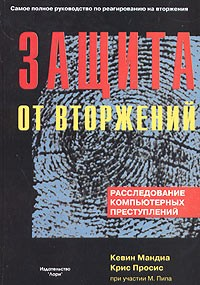 | Защита от вторжений. Расследование компьютерных преступлений | Кевин Мандиа, Крис Просис | 2005 | Книга была написана давно, для современных "безопасников" бесполезна. Но если абстрагироваться от конкретных технологий и взглянуть на процесс расследования в целом, то книга засияет в новом свете. И пусть технологии шагнули вперед, суть осталась прежней. |
|
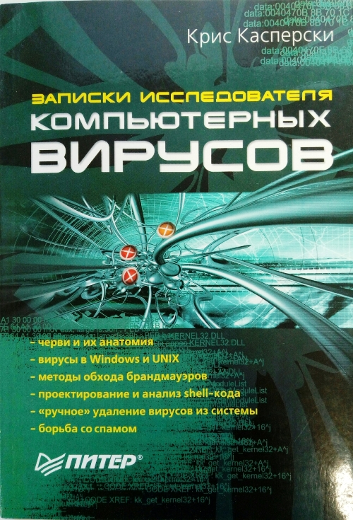 | Записки исследователя компьютерных вирусов | Крис Касперски | 2005 | Я прочитал эту книгу для общего развития. Но ничуть не жалею о потраченном времени, поскольку она помогла (хоть на время) развеять программистскую рутину, по-новому взглянуть на вопрос Windows vs Unix. Да и полезных советов в ней много. |
| Техника отладки программ без исходных текстов | Крис Касперски | 2005 | Неординарная и устаревшая. Присутствуют главы, скопированные Крисом из других своих книг. Но это неважно. Так как все равно ни в одном программистском блоге такого не прочитаешь. | |
| Техника защиты компакт-дисков от копирования | Крис Касперски | 2004 | Слабоватая книга. Речь о настоящей защите (вроде нашумевшей в свое время StarForce) не идет. Зато книга направляет мышление на поиск глюков в программах, особенно в окрестностях 16, 256, 65536 и т.д. | |
|
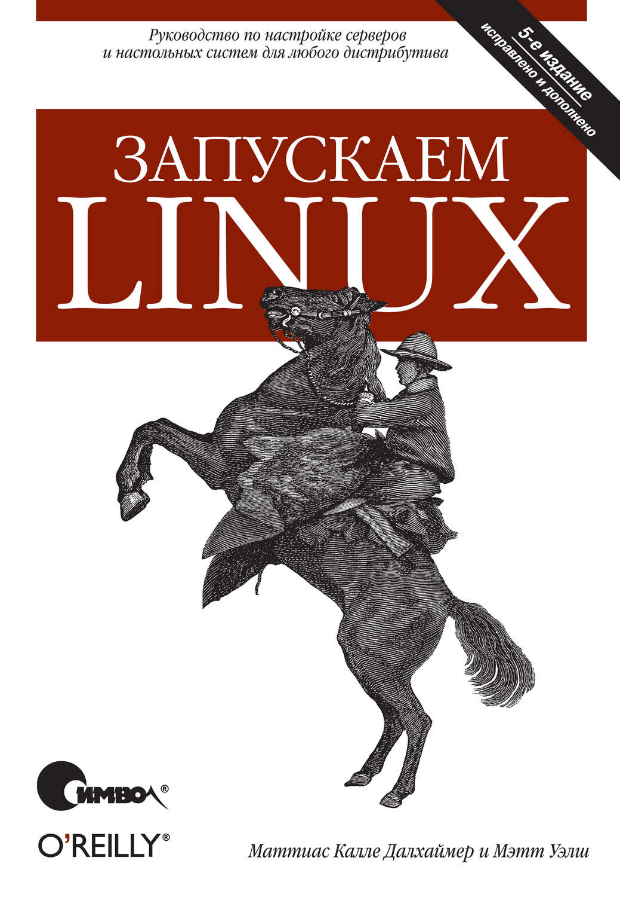 | Запускаем Linux | Маттиас Калле Далхаймер, Мэтт Уэлш | 2008 | Книга про Linux в целом. В настоящее время почти бесполезна. Т.к. многое изменилось с тех пор и в самой системе, и в прикладных программах. Однако книга учит решать проблемы своими силами. И попутно рассказывает историю становления Linux. |
|
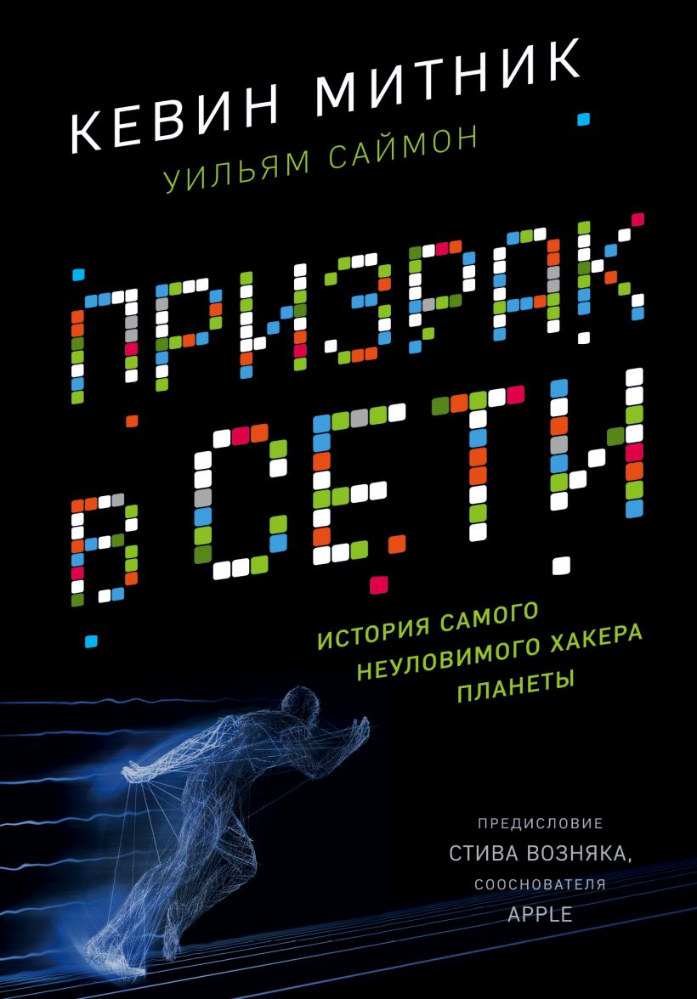 | Призрак в Сети | Кевин Митник, Уильям Саймон | 2012 | В Интернете про Кевина Митника ходят гигабайты сказок и просто плохо переведенных с английского статей. Эта книга расставляет все точки на i, переносит в конец 80-x и начало 90-x, не дает заскучать и не утомляет техническими деталями. |
|
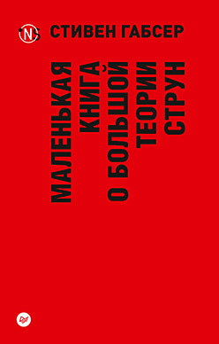 | Маленькая книга о большой теории струн | Стивен Габсер | 2018 | До тех пор пока не прочитал, ничего не понимал в теории струн. А когда прочитал - запутался еще больше. |
| English Zone | Михаил Голденков | 2005 | Сленг, грамматика и шутки смешаны в равных пропорциях. Намного интереснее учебника. Хотя ненамного легче, т.к. всё равно приходится вникать. | |
|
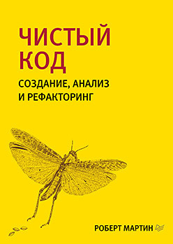 | Чистый код: создание, анализ и рефакторинг | Роберт Мартин | 2019 | Каждый программист уже слышал изложенный в книге материал в виде "устных преданий" и/или советов более опытных коллег. Здесь все это собрано в одном месте. Хотя читать книгу и уж тем более вникать и заниматься по ней все равно неудобно, т.к. обложка мягкая, а переплет жесткий. |